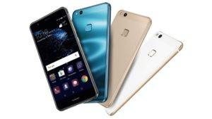

GSM-Service.bg е един от водещите сервизи за ремонт на Huawei на територията на град Велико Търново
Китайската компания Хуауей е един от лидерите на пазара за смартфони. С времето, компанията се доказа на световният пазар за мобилни телефони, като голяма част от моделите са доста надеждни, а същевременно и изработени от качествени материали. Дизайнът на Хуавей смартфоните е харесван от болшинството потребители, а цената, на която се продават модели от среден и висок клас привлича все повече клиенти. Като висококвалифициран сервиз, ние сме готови да решим всеки възникнал проблем с много от моделите на този бранд.
Въпреки доказаното качество на телефоните Huawei, проблеми не са изключени. Поради тази причина, ние предлагаме следните сервизни услуги за марката:
Смяна на дисплей или стъкло на Huawei
Смяна на счупено/пукнато стъкло на дисплей
Този тип поправка най-често се налага поради изпускане, огъване или удар на устройството. Смяната на стъкло се предлага само за част от моделите, най-вече с OLED тип екран, тъй като цената на нов такъв е доста висока. Задължително условие за тази услуга е дисплеят ви да е напълно функциониращ-да няма петна, линии и проблеми с цветовете. Смяната на стъкло, известна и като рециклиране на дисплей е услуга, която извършваме в следните стъпки:
- Деасемблиране на устройството
- Демонтаж на дисплея със счупено/пукнато стъкло
- Демонтаж и отстраняване на стъклото и счупените парченца от екрана
- Почистване и премахване на остатъчно лепило и прах
- Монтаж на нов прозрачен слой лепило (OCA)
- Монтаж и подравняване на ново стъкло
- Ламиниране и изтегляне на остатъчни балончета с въздух, посредством апаратура от последно поколение
- Монтаж на екрана и асемблиране на всички компоненти на устройството
- Пълен тест
Смяна на батерия
Батерията във всяко едно устройство се явява консуматив. Поради тази причина, нашият GSM сервиз извършва смяна на Huawei батерия на всички модели телефони, както и на голяма част от таблетите на ниска цена, като предлагаме 6 месечна гаранция за всяка батерия, сменена при нас. Смяната най-често се налага в период след изтичането на гаранцията на устройството. Като консуматив, батерията разполага с „живот“, измерим най-често в броят цикли (разреждания и зареждания). За да удължите живота й, препоръчваме зарежданията да се извършват при достигнат минимален процент на заряд (под 5%), като зарежданията винаги да се извършват до достигане на максималният капацитет (100%). Честите проблеми, които са симптом за неизправност в батерията са:
- Бързо разреждане на батерията (100%-0%)
- Произволно изключване или рестартиране на телефона
- Невъзможност за зареждане
- Изключване на устройството при произволен заряд (20%; 30%; 50% и т.н.)
Смяна на букса зареждане
С времето, буксата за зареждане става жертва на различни фактори, като амортизация, мокрене, мръсотия и др. Последствията са: невъзможност за зареждане на устройството, липса на разпознаване и достъп до данните посредством кабел, нужда от допълнително „наместване“ на кабела, за да се зарежда телефона или таблета и т.н. Разполагаме с богата гама букси и лентови кабели с блок-захранвания, чрез които вашият апарат ще се зарежда отново безпроблемно.
Смяна на аудио компоненти (микрофон, високоговорител или слушалка)
С времето, прахта, мръсотията и евентуално намокряне могат да занижат качеството на някой от аудио компонентите, а също и да настъпи дефект. Ние можем да извършим профилактика или смяна на високоговорител, слушалка или микрофон, като по този начин ще подобрим качеството на предавания или приемания звуков сигнал. След това вие отново ще използвате пълноценно и безпроблемно устройството си.
Смяна на камери и сензори
Huawei е един от лидерите в мобилната фотография. Като доказан GSM сервиз, ние извършваме диагностика, поправка и смяна на камери и сензори, независимо от модела на вашето устройство. Често проблемите, които могат да нарушат нормалната употреба на камерата са изпускане, намокряне, запрашаване, както и фабричен дефект на някой сензор. Ще извършим диагностика, за да установим точния проблем, след което ще пристъпим и към самия ремонт, нужен за отстраняване на повредата.
Смяна на бутони, сензор за пръстов отпечатък, лентови кабели
Ако някой от бутоните или сензора за пръстов отпечатък на функционира, не се колебайте да се свържете с нас. В нашият сервиз разполагаме с всички части, необходими за отстраняването на проблеми от този тип. Извършваме този тип ремонти в кратки срокове и на добра цена.
Ремонт и диагностика на платки, смяна на чипове и компоненти
Като квалифициран GSM сервиз за Huawei, ние ежедневно извършваме поправки, свързани с неправилно функциониране на основни платки. Посредством модерната ни апаратура, екипа от специалисти с нужни познания и схемите на конкретните модели, нашият сервизен център успешно отстранява повреди, настъпили вследствие на хардуерен дефект, като за целта извършваме диагностика и замервания, а според вида дефект-смяна на чипове и компоненти. При проблем и нужда от сервиз, не се колебайте, а се свържете с нас.
Обслужвани модели Huawei
2019
Huawei P30 | P30 Pro | P30 Lite | Nova 6 5G | Nova 6 | Nova 6 SE | MatePad Pro | Mate X | Y9s | Nova 5z | Enjoy 10s | Enjoy 10s | Enjoy 10 | Mate 30 RS Porsche Design | Mate 30 Pro | Mate 30 | Nova 5i Pro | Enjoy 10 Plus | Nova 5T | Mediapad M6 | Nova 5 | Nova 5 Pro | Nova 5i |Nova 4e | Y9 Prime (2019) | Y7 Prime (2019) | Y7 Pro (2019) | Nova 4 | P Smart 2019 | Y9 (2019) |
2018
Huawei MediaPad M5 8 | MediaPad M5 10 | Y7 (2018) | Y9 (2018) | Y7 Prime (2018) | Y7 Pro (2018) | P20 Lite | P20 | P20 Pro | Mate RS Porsche Design | Y6 (2018) | Y6 Prime (2018) | Y3 (2018) | Y5 Prime (2018) | Nova 3 | Nova 3i | P Smart+ (2019) | Mate 20 Lite | Mate 20 | Mate 20 Pro | Mate 20X | Mate 20 RS Porsche Design | Enjoy 9 | Y5 Lite (2018) |
2017
Huawei P9 Lite (2017) | Honor 6A | Mate 10 Lite | Nova 2s | P Smart | Mate 10 Porsche Design | Mate 10 Pro | Mate 10 | P9 lite mini | Y7 | Y7 dual sim | Y6 (2017) | Y5 (2017) | Honor 9 | Honor 8 Lite dual sim | Honor 8 Lite | P10 Lite | P10 Lite dual sim | Honor 8 Pro | P10 dual sim | P10 Plus dual sim | P10 | P10 Plus | P8 Lite (2017) | P8 Lite (2017) dual sim
2016
Huawei Nova Smart | Y3II dual sim | P9 Plus dual sim | Honor Magic | Honor 6X | Y5II | Y5II dual sim | Y3II | Mate 9 | Mate 9 Porsche Design | nova | nova plus | Honor 7 lite | Honor 8 | P9 lite dual sim | P9 dual sim | P9 lite | P9 | P9 Plus